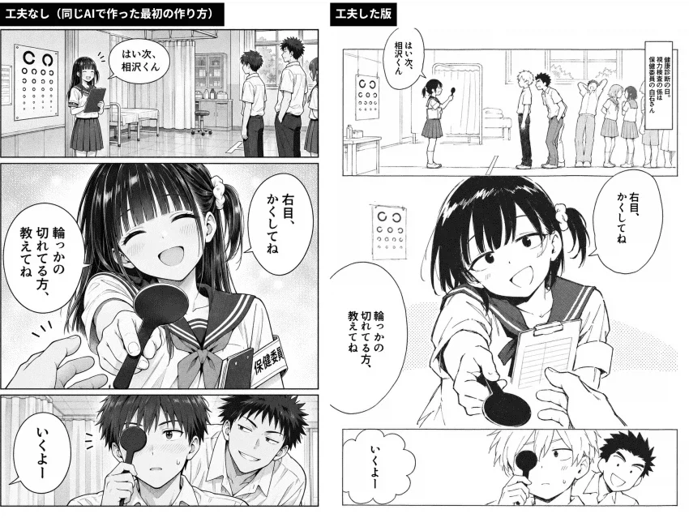
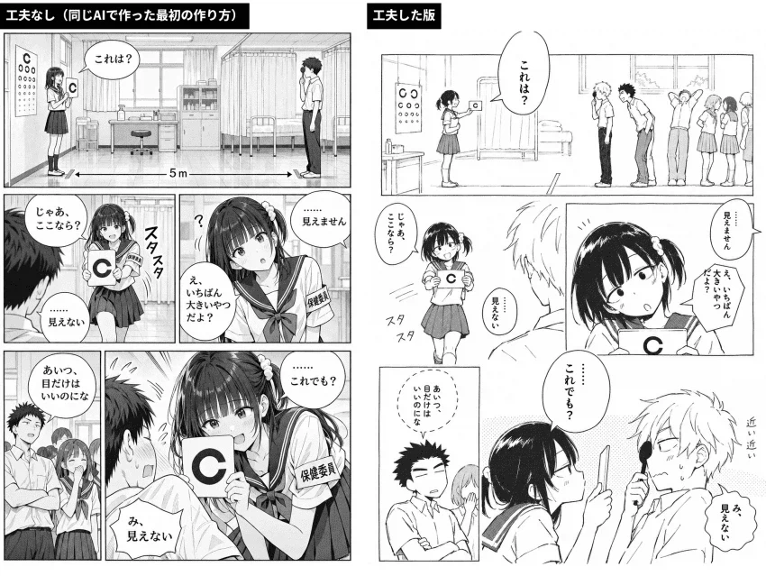
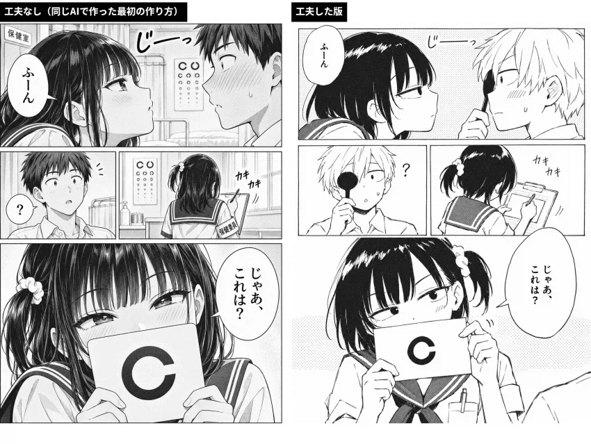
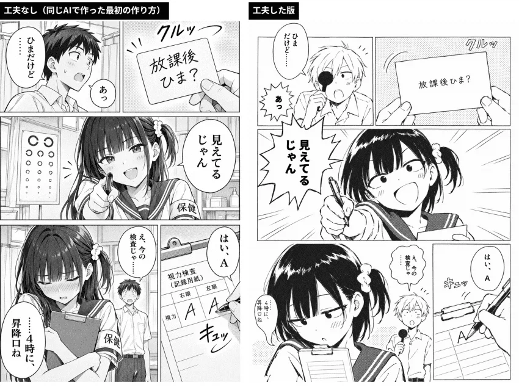

우선 너무 세밀한 AI의 특징을 작화 수정해줄뿐 아니라,
미세한 구도 크롭변경 / 배경생략 등
실제 만화의 표현문법을 입력했다고 함.
양쪽모두 수작업은 아예없는 100% 생성물




우선 너무 세밀한 AI의 특징을 작화 수정해줄뿐 아니라,
미세한 구도 크롭변경 / 배경생략 등
실제 만화의 표현문법을 입력했다고 함.
양쪽모두 수작업은 아예없는 100% 생성물
너무 잘그리면 ai티 나니까 밤티나게 수정까지 ㄷㄷ
지리네
오른쪽은 진짜 괜찮네
오른쪽머리왜케 이상하게 묶었지 포니테일이야 사이드테일이야 ㅋㅋ
사이드포니테일
컷마다 따로 만들어서 편집한 게 아니라 한 장을 통째로 생성했는데 오른쪽처럼 나왔다고?
뭘로 뽑았노 ㅅ발련ㄴ아
토가시 뭐하냐
AI 뭐하냐 빨랑 토가시 도와라.
근데 저것도 저 그림체 고정이면 다를게 없지않나
다른 결과물도 보고싶네
이러다 헌헌같은거 발매한 화들 다 학습시켜서 AI가 다음화 그리게 만들어도 그럴싸해지는거 아니냐
엔딩 꼬라박은 만화들 AI가 다시 그리게 시키면 어떤 엔딩 나올지 궁금하네
몇몇 작가는 이미 작화 구현 진즉에 끝났을걸? 토리야마나 무라타
몇몇이 아니라 데즈카 오사무 부터 무명의 이름모를 작가까지 작화구현은 한 2년전에 끝났음. 저렇게 짜임새 있는 만화로 그려내는게 아직이었지
헌헌은 그렇게라도 하자
헌헌 AI 봇 3개월째 생각중 (생각안함)
이야 오른쪽은 진짜 수작업 같네 ㄷㄷ
프롬프트를 잘 깍은건가? 아니면 전용 모델이 따로 있나?
ㅋㅋㅋ아직도 손으로 그리는 흑우 업제?
토가시 이시발년아!!! 딸깍하면 되잖아 이제!!! 뭐가문젠데
토가시 너라면 할수잇다 이제!
깔끔해졌네 좋다
감이 없는 사람들은 좋겠다 저게 안느껴져서..
오 이제 콘티만 작성하면 저렇게 만들어줄 수도 있겠네!!
개인적으로 오른쪽이 더 취향이다 ...
오른쪽도 살짝 어색하긴 한데, ai느낌 많이 없어졌다 진짜 개쩌네
미우라켄타로 상도.. a.i로 그렸어야했는데.. ㅜㅜ
두번째 페이지 왼쪽 아래 감은 눈 어케했냐
AI 느낌을 자우는 AI ㄷㄷ
Ai느낌을 지우는 Ai의 느낌을 또 지우는 Ai를 개발하고;;
Ai도입으로 웹툰 음악 예술쪽이 ㅈ될줄 누가알았겠냐고 ㅋㅋㅋ
웹툰 음악 예술쪽만이 아니야...ㅜ
근데 티 나도 왼쪽으로 보고 싶은데? 캐릭이 더 걍 이쁨
만알못쉑
만화를 잘 안보고 히토미를 자주봐서 ㅎㅎ;
왼쪽은 뭔가 애니메이션화 했을때 잘어울리는거같음 ㅋㅋ
오른쪽의 꼴림을 모르네
나도
캐디는 냅두고 연출만 오른쪽으로 하면 될 듯
이말년 삼국지 연재 가능?
만화가들 뭐먹고사냐
마우스를 쥐어라 토가시!!!
그렇네 케릭터 얼굴이랑 소품 일관성 유지되네 ㄷ
하나의 ai의재귀형보단 다른 ai의 상호검증식이 결과물이 더좋은거같네
남주 머리색까지 바꿔주는건 미쳤네
Ai특유의 과한 디테일이 걷어내지니까 훨 낫네
젠장.. 둘다 AI였다니..
우측 감정이 살아있네
우측 맘에 드네
오른쪽은 말 안 해주면 모를 것 같다 진짜
이런씨 왼쪽은 완전 ai고 오른쪽이 원본이네 하고있었는데 ㅋㅋㅋ 둘다 ai작업물이라고?